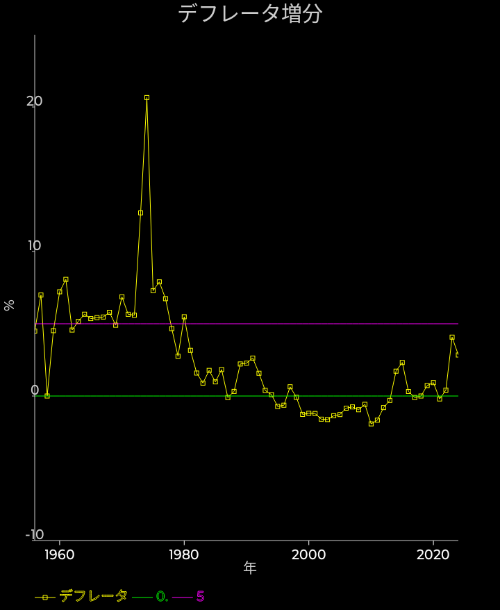

GDPデフレータ増分

物価としては最も確かだが更新の頻度が遅い、GDPデフレータを見てみましょう。
1995年以降、2013年ころまでおおむね0を下回っていたのがわかります。いわゆるデフレという状態ですね。
2014年からは上下はあるけれどおおむね0は超えていますが、2%くらいが好ましいと言われる事の多いインフレ率なので、2022年までは低めでした。
2023年は大きく上昇し、4%くらい、2024年も3%くらいとなっています。
3%が物価高かどうかは微妙な所ですが、4%はインフレだったと言って良い数字でしょう。
ここ2年は少なくともデフレでは無い、とは言えそうです。
なお、ブランシャールなどがターゲットを4%に上げるのはどうか？と提言して話題になった事がありますが、それが2023年くらいの物価上昇率という事ですね。